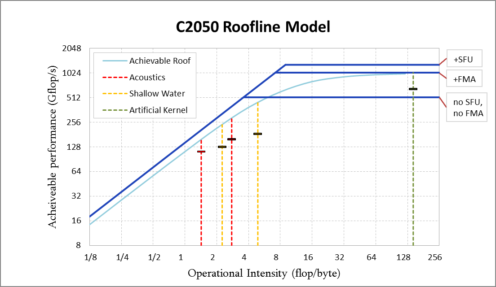

GPU-accelerated Riemann solvers
Riemann solvers are the core algorithms in numerical methods for wave propagation. Because they can exhibit high arithmetic intensity, they are well suited to implementation on GPUs. In this project, the student will further develop an existing experimental GPU Riemann solver (CUDAClaw) into a software tool that is accessible to application scientists in computational fluid dynamics and water waves. This will include interfacing the code with the PyClaw software and implementing additional GPU Riemann solver kernels.
This project is a collaboration with George Turkiyyah of the Extreme Computing Research Center at KAUST. Suggested background reading: